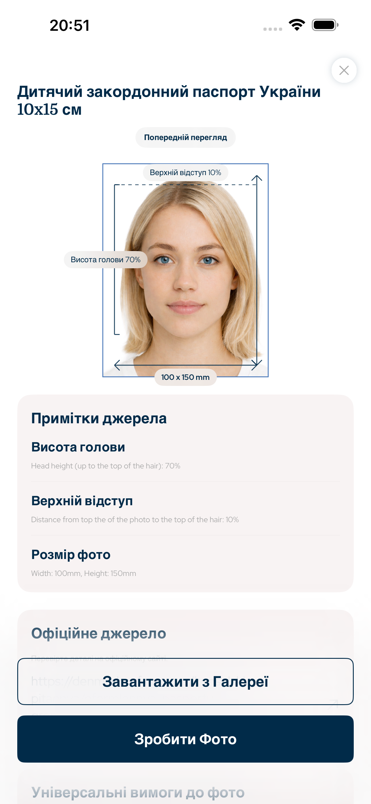

Ukraine · фото на паспорт додаток, фото на візу, фото на ID, біометричне фото, фото для документів
Фото на паспорт, візу та ID з правильними розмірами
Цей iPhone-додаток готує фото на паспорт, візу, ID-картку, посвідку та водійське посвідчення з точним розміром, пропорцією голови, верхнім відступом, фоном і експортом.
- Обличчя
- Без AI-змін
- Кадрування
- Голова + верхній відступ
- Експорт
- Цифровий + друк

Верхній відступ
точний
Пропорція голови
з підказками
Вимоги для пошуку
Побудовано на офіційних правилах геометрії фото
Додаток зосереджений на вимірюваних правилах фото для документів: розмір фото, експорт пікселів, висота голови, положення обличчя, верхній відступ, фон і розмітка для друку.
Пропорція голови та верхній відступ
Без AI-зміни рис обличчя
Цифровий файл і аркуш для друку
Ukraine document types
Фото, які може підготувати цей додаток
Додаток для фото на паспорт охоплює найпоширеніші офіційні фотопроцеси для користувачів iPhone, яким потрібен цифровий файл або аркуш для друку.
Фото на паспорт
Фото на візу
Фото на ID
Фото на посвідчення
Аркуш для друку
Достовірність фото
Без AI-змін рис обличчя
Процес навмисно простий: кадруйте зображення, вирівняйте голову, збережіть обличчя, підготуйте фон, потім збережіть у правильному розмірі. Призначено для підготовки офіційних фото для документів, а не для краси.
1Оберіть країну та документ
2Вирівняйте голову та відступ
3Експортуйте цифровий файл або аркуш для друку
Питання
FAQ
Чи змінює додаток обличчя за допомогою AI?
Ні. Додаток не змінює риси обличчя, а працює з розміром, кадруванням, фоном і експортом.
Чи можна зробити фото на паспорт?
Так. Оберіть країну та тип документа для потрібного розміру і кадрування.
Чи можна надрукувати результат?
Так. Експортуйте цифровий файл або аркуш для друку.
Додаток для фото на паспорт
Підготуйте фото на паспорт, візу, ID-картку або посвідчення на iPhone з точним розміром, пропорцією голови та експортом для друку.
Завантажити в App Store